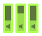

Fonofone, c’est à la fois un mini-studio et un échantillonneur où tous les outils de traitement sont représentés par une forme abstraite sur laquelle on intervient directement sans avoir à entrer des données (sauf pour le métronome).
Fonofone est disponible en téléchargement, pour la tablette iPad ou en version web (fonofone.org)
Les trois modes d'enregistrement
(Application tablette)
Variateur de hauteur / vitesse
(Application tablette)
(Application tablette)

Mélangeur & manipulations en direct
(Application tablette)
Réverbérateur